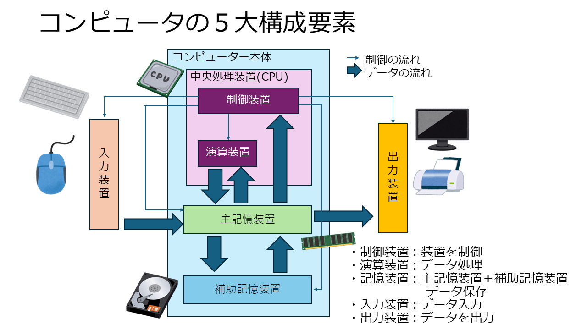

1.2. 第2回 コンピューターとプログラミングとは？¶
今回は「そもそもコンピューターってどうやって動いているの？」「プログラミングって何？」というがテーマです
「ノイマン型」や「コンパイル」など、なんだか難しそうな専門用語が出てきますが、分かりやすい例えを使って考えていきましょう。
最初は誰もが「？」となる部分ですが、ここを知っておくと、今後エラーが出た時や新しいことを学ぶ時に「あ、そういう仕組みだったな」
と納得できるようになりますよ。焦らず、自分のペースで進めていきましょう。
🎯 到達目標¶
プログラミングとプログラミング言語の役割 を自分の言葉で説明できる。
ノイマン型コンピューター の基本的な仕組みをイメージできる。
様々な言語の分類（インタプリタ・動的型付けなど）を知り、Pythonの特徴 を理解する。
データ分析に欠かせない ライセンス（オープンデータやクリエイティブ・コモンズ） について理解する。
プログラミングとは？ プログラミング言語とは？¶
まずは基本中の基本です。「プログラミング」とは何でしょうか？
プログラミングとは？¶
一言で言えば、「コンピューターにやってほしい手順（指示書）を書くこと」 です。 コンピューターは計算がとてつもなく早いですが、「自分で考えて動く」ことはできません。 人間が「こうしてね」と細かく教える必要があります。
プログラミング言語と、その役割¶
では、私たちが日本語で「カフェの売上を計算して！」と言えばコンピューターは動いてくれるでしょうか？ 残念ながら、コンピューターは 「0」と「1」の言葉（機械語） しか理解できません。
そこで登場するのが プログラミング言語 です。 人間が理解しやすい言葉（英語や数式に近い言葉）で書いた指示を、コンピューターが分かる「0と1」に翻訳してくれる 「通訳者」の役割 を果たします。
【プログラミング言語の役割の図解】
[ 🧑🎓 私たち (人間) ]
「売上データをグラフにして！」
│
▼ (Pythonなどのプログラミング言語で指示を書く)
│
[ 📖 プログラミング言語 (通訳者) ]
「print(sales_data) ...」
│
▼ (0と1の機械語に翻訳！)
│
[ 💻 コンピューター (機械) ]
「01011001 11000101... (理解して実行！)」
このように、人間と機械の間を取り持ってくれるのがプログラミング言語（Pythonなど）なのです。
コンピューターの仕組み：ノイマン型コンピューター¶
私たちが普段使っているスマホやパソコンは、ほぼすべて 「ノイマン型コンピューター」 と呼ばれる仕組みで作られています。
ノイマン型コンピューターの最大の特徴は、「プログラム内蔵方式」 と呼ばれる仕組みです。 難しく聞こえますが、「料理人（CPU）」と「キッチン（メモリ）」 に例えるととても簡単です！
🍳 キッチンの例えで理解しよう！¶
メモリ（記憶装置） ＝ 作業台 ＆ レシピ本
プログラム（レシピ）とデータ（食材）を一時的に置いておく場所です。
CPU（中央処理装置） ＝ 料理人
メモリからレシピ（指示）を1行ずつ読み取り、順番に調理（計算）していきます。
入力・出力装置 ＝ 注文窓口 ＆ 配膳口
キーボードからデータを入れたり、画面に結果を出したりします。
【ノイマン型コンピューターの構成】
(入力) 注文が入る ──▶ [ 🧠 CPU (料理人) ] ──▶ (出力) 料理が出る
▲ │
レシピを読む │ │ 食材を取り出す・置く
│ ▼
[ 🗄️ メモリ (作業台) ]
(ここにプログラムとデータが同居している)
※ちなみに、人間の脳の仕組みを真似たAI特化のチップや、量子コンピューターなど、このノイマン型とは全く違う仕組みで動く**「非ノイマン型コンピューター」**というものも最近はあります。
ノイマン型コンピュータとは¶
ノイマン型コンピューターとは、現代のコンピューターのほとんどが採用している基本的な設計様式のことです。1946年にハンガリー出身の数学者ジョン・フォン・ノイマンが考案したことから、その名がつけられました。
主な特徴は以下の通りです。
プログラム内蔵方式（ストアードプログラム方式）:
プログラム（コンピューターに指示する命令の集合）とデータを同じ記憶装置（メモリ）に格納します。
これにより、同じハードウェアで様々なプログラムを実行できる柔軟性と汎用性が高まりました。
現代のコンピューターがソフトウェアを入れ替えるだけで様々な用途に使えるのは、この方式のおかげです。
逐次制御方式:
中央処理装置（CPU）が、記憶装置からプログラムの命令やデータを一つずつ順番に読み込み、実行していきます。
具体的には、「命令の取り出し」「命令の解読」「命令の実行」「結果の書き込み」といった一連の流れを繰り返します。
主要な構成要素: ノイマン型コンピューターは、主に以下の5つの要素で構成されています。
中央処理装置（CPU）: コンピューターの「頭脳」にあたり、計算処理や制御、命令の実行を行います。
制御装置: 命令の取得と実行を監督し、コンピューター全体の動作を管理します。
演算装置: データに対して計算や論理演算を行います。
レジスタ: 演算中に一時的にデータを保持するための高速な記憶領域です。
記憶装置（メモリ）: データやプログラムを一時的に保存する「作業場」のような役割を果たします。主記憶装置（メインメモリ）などがこれにあたります。
入出力装置: 外部の周辺機器（キーボード、マウス、ディスプレイなど）やユーザーとの間でデータのやり取りを行います。
補助記憶装置: データやプログラムを永続的に保存するための装置です（ハードディスク、SSDなど）。
バス: これらの各要素を結びつけ、データや命令をやり取りするための通路です。
ノイマン・ボトルネック: ノイマン型コンピューターの構造的な課題として、「ノイマン・ボトルネック」という問題があります。これは、CPUと記憶装置の間をつなぐバスのデータ転送速度が、CPUの処理速度に比べて遅いため、データのやり取りがボトルネックとなり、全体の処理速度に限界が生じる現象です。現代のコンピューターでは、キャッシュメモリの多段階化などによってこの問題が緩和されています。
まとめると、ノイマン型コンピューターは、プログラムとデータを同じメモリに格納し、CPUがそれらを順次実行していくことで動作するコンピューターの基本的な仕組みであり、現在普及しているほとんどのコンピューターに採用されています。
5大要素¶

「5大要素」という言葉は文脈によって様々な意味を持ちますが、前回のノイマン型コンピューターに関する質問から、コンピューターの主要な構成要素について尋ねられていると判断できます。
コンピューターの「5大要素」または「5大装置」とは、コンピューターが機能するために不可欠な以下の5つの要素を指します。
入力装置（Input Unit）:
外部からのデータや命令をコンピューターに入力するための装置です。
例：キーボード、マウス、スキャナー、マイクなど。
出力装置（Output Unit）:
コンピューターが処理した結果や情報を、人間が認識できる形（視覚、聴覚など）で外部に出力するための装置です。
例：ディスプレイ、プリンター、スピーカーなど。
記憶装置（Memory Unit / Storage Unit）:
プログラムやデータを一時的、または永続的に保存するための装置です。
CPUが直接アクセスする高速な「主記憶装置（メインメモリ）」と、大量のデータを保存する「補助記憶装置（ハードディスク、SSDなど）」があります。
主記憶装置（メインメモリ）
電気的にデータを記録するので高速ですが、電気で記録しているので、電源を切るとデータが消えてしまいます。
補助記憶装置（ハードディスク、SSDなど）
電源切ってもデータが保持できるよう記憶しておく装置で、主に磁気や光で記録を行います。外部記憶装置と呼ばれます。
OSやアプリケーションなどの各プログラムは、電源を切っても消えないように、普段は 補助記憶装置(ハードディスク)に格納されていますが、実行時に主記憶装置（メモリー）に読み込まれ、CPUによってデータの処理が行われます。
演算装置（Arithmetic Logic Unit: ALU）:
四則演算（足し算、引き算、掛け算、割り算）や論理演算（AND、OR、NOTなど）といった、あらゆる計算処理を行う装置です。
制御装置（Control Unit）:
コンピューター全体の動作を制御し、各装置間のデータの流れや命令の実行順序を管理する装置です。
入力装置からの命令を解釈し、記憶装置からデータを取り出し、演算装置に計算を指示し、出力装置に結果を出力させるといった、一連の処理を統括します。
現代のコンピューターでは、このうち「演算装置」と「制御装置」が統合されて「中央処理装置（CPU: Central Processing Unit）」と呼ばれ、コンピューターの「脳」として機能しています。
代表的なプログラミング言語の分類とPython¶
世界には200種類以上のプログラミング言語があります。それぞれ得意・不得意があり、いくつかのアプローチで分類できます。Pythonがどこに属するかを見てみましょう。
① 翻訳のタイミング（コンパイル言語 vs インタプリタ言語）¶
コンパイル言語（例：C言語, Java）
一括翻訳！ 本を丸ごと1冊翻訳してから実行します。実行スピードがとても速いですが、少しでも文法を間違えると最初は全く動きません。
インタプリタ言語（例：Python, JavaScript）
同時通訳！ 1行ずつ翻訳しながら実行します。途中で間違えていても、そこまでは動きます。データ分析など、「少し書いて結果を見る」を繰り返す作業にぴったりです。
② データの型のルール（静的型付け vs 動的型付け）¶
静的型付け言語（例：C言語, Java）
制服！ 箱（変数）を作るときに「これは数字専用！」「これは文字専用！」と厳密にルールを決めます。エラーが起きにくいですが、書くのが少し大変です。
動的型付け言語（例：Python, Ruby）
私服！ 中に入れたものに合わせて、自動的に「数字だな」「文字だな」と柔軟に対応してくれます。初心者にも書きやすいのが特徴です。
③ 処理の書き方のスタイル（手続き型 vs オブジェクト指向）¶
手続き型言語（例：C言語）
「1.お湯を沸かす → 2.粉を入れる → 3.注ぐ」のように、手順を上から下へ順番に書いていくスタイルです。
オブジェクト指向言語（例：Java）
「バリスタロボット」や「レジロボット」など、役割を持った「モノ（オブジェクト）」を作り、それらを連携させて動かすスタイルです。
Pythonは… 両方の良いとこ取り（マルチパラダイム）ができます！最初は分かりやすい「手続き型」で書き、複雑になってきたら「オブジェクト指向」も使える、とても便利な言語です。
Pythonの歴史¶
Pythonの歴史は、オランダ人プログラマーのグイド・ヴァンロッサム (Guido van Rossum) によって、1980年代後半にさかのぼります。彼の「クリスマスの暇つぶし」から始まった開発は、現在、世界で最も影響力のあるプログラミング言語の一つとして成長しました。
以下に、Pythonの主要な歴史的マイルストーンをまとめます。
黎明期 (1980年代後半～1990年代前半)¶
1980年代後半: グイド・ヴァンロッサムがオランダの数学・情報科学センター (CWI) で働いていた際、既存のプログラミング言語（ABC言語など）の欠点を補い、よりシンプルで読みやすい言語を目指してPythonの開発に着手します。彼の目的は、教育目的やシステム管理のためのスクリプト言語として、より良いものを作ることにありました。
1989年12月: グイド・ヴァンロッサムは、クリスマス休暇中に「ABC言語の欠点のないUnix/CWI Amoeba向けスクリプト言語」としてPythonの開発を始めます。
1991年: Pythonの最初のバージョンである Python 0.9.0 のソースコードが公開されます。この時点で、すでにオブジェクト指向の概念（クラス、継承、例外処理など）が含まれていました。
1994年1月: Python 1.0 がリリースされます。このバージョンでは、ラムダ関数、
map、filter、reduceといった関数型プログラミングの機能が導入されました。
普及と成長 (2000年代)¶
2000年10月: Python 2.0 がリリースされます。このバージョンはPythonの人気を大きく拡大させた転換点となります。特に、ガベージコレクション機能やUnicodeサポート、リスト内包表記といった重要な機能が追加されました。
2001年: Pythonの公式な開発とコミュニティを管理するための非営利団体であるPython Software Foundation (PSF) が設立されます。グイド・ヴァンロッサムは「慈悲深き終身独裁者（Benevolent Dictator For Life - BDFL）」として、その後のPythonの方向性を主導しました。
2005年: WebフレームワークのDjangoが誕生し、PythonのWeb開発における地位を確立し始めます。
Python 3の登場と現代 (2008年～現在)¶
2008年12月: Python 3.0 (通称 Python 3000 または Py3K) がリリースされます。これは、それまでのPython 2.x系との後方互換性を意図的に破壊し、言語の根本的なクリーンアップと改善を目指したメジャーアップデートでした。主な変更点としては、
print文が関数になったこと、整数除算の振る舞いの変更、Unicodeの扱いの一貫性などが挙げられます。2010年代前半: Python 3への移行は当初緩やかでしたが、データサイエンス、機械学習、人工知能といった分野の隆盛とともに、Pythonの利用が爆発的に増加します。これらの新しい技術分野では、Python 3系の強力なライブラリ（NumPy, Pandas, Scikit-learn, TensorFlow, PyTorchなど）が中心的な役割を果たしました。
2020年1月1日: Python 2.7の公式サポートが終了します。これにより、多くのプロジェクトや企業がPython 3への移行を完了させることになりました。
現在: Pythonは、データサイエンス、機械学習、Web開発、自動化、教育など、多岐にわたる分野で最も人気があり、広く利用されているプログラミング言語の一つとしてその地位を確立しています。グイド・ヴァンロッサムは2018年にBDFLを辞任しましたが、Pythonの開発は活発なコミュニティとPSFによって継続されています。
Pythonの歴史は、その創始者のシンプルさ、読みやすさ、汎用性への追求と、活発なコミュニティによる継続的な改善と発展の物語です。
Pythonの主な特徴¶
Pythonは、その多用途性、読みやすさ、そして大規模なコミュニティサポートにより、世界で最も人気のあるプログラミング言語の1つとなっています。
以下にその主な特徴と人気の理由を詳述します。
シンプルで読みやすい構文:
Pythonは、非常にクリーンで直感的な構文を持っています。英語に近いキーワードとシンプルな構造により、初心者でも学びやすく、コードの読み書きが容易です。
強制的なインデント（字下げ）は、コードの可読性を高める効果があります。
多用途性（汎用性）:
Web開発（Django, Flask）
データサイエンス、機械学習、人工知能（NumPy, Pandas, Scikit-learn, TensorFlow, PyTorch）
自動化とスクリプト作成
科学技術計算
デスクトップアプリケーション開発（Tkinter, PyQt）
ゲーム開発（Pygame）
システム管理とネットワークプログラミング
豊富なライブラリとフレームワーク:
データ分析、科学計算、Web開発、機械学習など、さまざまな分野に対応する膨大な数のライブラリとフレームワークが存在します。これにより、開発者はゼロからすべてを構築する必要がなく、開発時間を大幅に短縮できます。
インタプリタ型言語:
コンパイルが不要なため、コードをすぐに実行して結果を確認できます。これは、開発の迅速化とデバッグの容易さにつながります。
オブジェクト指向:
オブジェクト指向プログラミング（OOP）の概念をサポートしており、大規模なプロジェクトでも再利用可能でモジュール化されたコードを書くことができます。
クロスプラットフォーム:
Windows、macOS、Linuxなど、主要なオペレーティングシステムで動作します。一度書いたコードは、ほとんど変更することなく異なるプラットフォームで実行できます。
大規模なコミュニティとサポート:
世界中に活発な開発者コミュニティが存在します。問題が発生した際に、豊富なドキュメント、フォーラム、オンラインリソースからサポートを得やすいです。
Pythonが人気のある理由¶
学習曲線が緩やか:
前述のシンプルな構文により、プログラミング初心者でも比較的容易に習得できます。これにより、教育現場や入門書で広く採用されています。
生産性の高さ:
豊富なライブラリと簡潔な構文により、少ないコード量で多くの機能を実現できます。これにより、開発者はより迅速にアイデアを具現化し、プロダクトを市場に投入できます。
データサイエンスとAI分野での台頭:
近年のデータサイエンス、機械学習、人工知能の爆発的な成長に伴い、Pythonはその中心的な言語となっています。NumPy、Pandas、Scikit-learn、TensorFlow、PyTorchといった強力なライブラリが、この分野でのPythonの地位を確固たるものにしています。
多様なキャリアパス:
Web開発者、データサイエンティスト、機械学習エンジニア、自動化エンジニアなど、Pythonスキルは多くの職種で求められています。これにより、Pythonを学ぶことは多様なキャリアの選択肢につながります。
オープンソース:
Python自体がオープンソースであり、誰でも自由に利用、配布、変更が可能です。これにより、コミュニティによる継続的な改善と発展が保証されています。
Pythonはその人気の裏に多くの長所を持つ一方で、いくつかの短所も存在します。バランスの取れた視点から見ていきましょう。
長所 (Advantages)¶
学習のしやすさ: Pythonは非常にシンプルな構文と自然言語に近い記述で書かれているため、プログラミング初心者でも比較的短期間で習得できます。これにより、学習コストが低く、プログラミング教育の現場でも広く採用されています。
高い生産性: 豊富な標準ライブラリとサードパーティライブラリ（NumPy, Pandas, Django, Flask, TensorFlowなど）が充実しているため、ゼロからコードを書く必要が少なく、開発時間を大幅に短縮できます。これにより、少ないコード量で複雑な機能を実現できます。
多様な用途（汎用性）: Web開発、データサイエンス、機械学習、AI、自動化スクリプト、科学技術計算、デスクトップアプリケーション、ゲーム開発など、非常に幅広い分野で活用されています。
強力なコミュニティとエコシステム: 世界中に膨大な数のPythonユーザーと開発者が存在し、活発なコミュニティが形成されています。これにより、問題解決のための情報や学習リソースが豊富にあり、困ったときにサポートを得やすい環境です。
クロスプラットフォーム: Windows、macOS、Linuxなど、主要なオペレーティングシステム上で動作します。一度書かれたコードは、ほとんど変更することなく異なる環境で実行できるため、開発の柔軟性が高いです。
インタプリタ型言語: コンパイルが不要なため、コードを記述後すぐに実行して結果を確認できます。これにより、開発サイクルが高速になり、デバッグも比較的容易です。
短所 (Disadvantages)¶
実行速度: Pythonはインタプリタ型言語であるため、C++やJavaなどのコンパイラ型言語と比較して実行速度が遅い傾向があります。特にCPUを大量に消費する処理や、大規模なデータ処理においては、この点がボトルネックになることがあります。
メモリ使用量: 他の言語に比べてメモリを多く消費する傾向があります。これは、Pythonの柔軟性や動的な性質に起因する部分もありますが、リソースが限られた環境では注意が必要です。
モバイル開発には不向き: スマートフォン向けのネイティブアプリ開発（iOS, Android）においては、Swift/Kotlin/Javaなどが主要であり、Pythonはあまり採用されません。Webベースのモバイルアプリには使えますが、ネイティブパフォーマンスを求める場合は別の選択肢が一般的です。
GIL (Global Interpreter Lock) の存在: Pythonの標準的な実装であるCPythonにはGILという仕組みがあり、マルチスレッドプログラミングにおいて、同時に複数のスレッドがPythonバイトコードを実行するのを制限します。これにより、CPUバウンドな処理では真の並列実行が難しくなります（ただし、マルチプロセスや非同期処理で回避できます）。
厳密な型チェックの欠如（動的型付け）: Pythonは動的型付け言語であるため、変数の型を明示的に宣言する必要がありません。これはコードを簡潔にするメリットがある一方で、大規模なプロジェクトや共同開発では、実行時エラーが発生しやすくなるリスクがあります。型ヒント（Type Hinting）で補うことは可能ですが、強制ではありません。
データ分析に必須！ライセンスとオープンデータ¶
Pythonを使えば、インターネット上のあらゆるデータを収集・分析できるようになります。
しかし、「ネットにあるデータは勝手に何でも使っていい」わけではありません！
そこで重要なのが「ライセンス（利用許諾）」です。
オープンデータとは？¶
国や自治体、企業などが**「誰もが自由に使い、再配布していいですよ」**と公開しているデータのことです。 たとえば、「〇〇市の年代別人口データ」や「気象庁の過去の気温データ」などです。これらを使うことで、文系の私たちでも本格的な社会データの分析が可能になります。
クリエイティブ・コモンズ (CC) とは？¶
作者が「この条件を守ってくれれば、私の作品（データ）を使っていいよ！」という意思表示をするための世界共通のマークです。
マークの例 |
意味（ルール） |
|---|---|
BY (表示) |
作者の名前や作品のリンクを書けば使ってOK！ |
NC (非営利) |
商業目的（お金儲け）じゃなければ使ってOK！ |
ND (改変禁止) |
データを勝手に書き換えたり、加工しなければ使ってOK！ |
データ分析をするときは、必ず「このデータはどんなライセンスかな？」と確認するクセをつけましょう。
いざ実践！Pythonで「コンピューターに指示」を出そう¶
ここからは、実際にPythonを使って「手続き型」の指示を出してみましょう。 Pythonは「インタプリタ言語」なので、1行ずつすぐに結果を返してくれますよ。
# Pythonという「通訳者」を通して、コンピューターに「表示して」と指示を出します。
print("こんにちは！私はノイマン型コンピューターです。")
# データ分析の第一歩！カフェの客数を変数（メモリの作業台）に置きます。
monday_customers = 120
tuesday_customers = 85
# 足し算の指示を出します。
total = monday_customers + tuesday_customers
print("月曜と火曜の合計客数は:", total, "人です。")
💻 演習課題¶
それでは、今日の知識を使ってプログラミングの演習に挑戦しましょう！ 講義と演習の時間は約半分ずつ（50%ずつ）取っています。じっくり取り組んでみてくださいね。
エラーが出ても大丈夫。「コンピュータに自分の指示がうまく伝わらなかっただけ」です。 焦らずに原因を探しましょう。
# 演習1: インタプリタ言語の「同時通訳」を体験しよう（難易度：易）
# 以下のコードは上から順番に実行されます。
# TODO: 3行目の print文の中身を書き換えて、自分の好きな食べ物を表示させてください。
print("指示1: データを読み込みます...")
print("指示2: データを分析します...")
# TODO: ここを書き換える
print("指示3: 私の好きな食べ物は 〇〇 です！")
# 演習2: 動的型付け言語の柔軟さを体験しよう（難易度：易）
# Pythonは、変数（箱）の中身に合わせて柔軟に型を変えてくれます。
# 以下のコードを実行し、エラーが出ずに文字も数字も同じ箱に入れられることを確認してください。
# 確認できたら、TODOの部分に好きな数字を入れて実行してみましょう。
# 最初は文字（テキストデータ）を入れます
my_box = "オープンデータ"
print("箱の中身:", my_box)
# 次に、同じ箱に数字（数値データ）を入れます（Pythonならこれが可能！）
# TODO: 以下の 0 を好きな数字に変えてください
my_box = 0
print("箱の中身:", my_box)
# 演習3: カフェのデータ分析（売上計算）（難易度：中）
# 手続き型のスタイルで、カフェの売上を順番に計算してみましょう。
# 1杯450円のコーヒーが、午前中に12杯、午後に18杯売れました。
# TODO: 以下の計算式を完成させて、1日の合計売上金額を出力してください。
coffee_price = 450
morning_sales = 12
afternoon_sales = 18
# 1日の販売杯数を計算
# TODO: morning_sales と afternoon_sales を足し算しよう
total_cups =
# 合計金額を計算
# TODO: total_cups と coffee_price を掛け算しよう
total_revenue =
print("今日のコーヒーの合計売上は", total_revenue, "円です。")
# 演習4: エラーのデバッグ（修正）に挑戦！（難易度：中）
# 文系学生が一番つまずきやすいエラー「NameError」の体験です。
# 以下のコードを実行するとエラーが出ます。
# 理由：変数名（箱の名前）を間違えて呼び出しているからです。
# TODO: エラーを読み解いて、正しい変数名に修正し、実行を成功させてください。
cafe_name = "ムサシ・コーヒー"
# わざと間違えた名前で呼び出しています。cafe_name に直しましょう！
print("いらっしゃいませ！", cafe_nane, "へようこそ！")
# 演習5: 実践！オープンデータを使った消費税計算のシミュレーション（難易度：難）
# あなたは「ある市のカフェ年間消費額」のオープンデータを手に入れました。
# 1人あたりの消費額は「15000円（税抜き）」でした。
# TODO: 消費税（10%）を含めた「税込み金額」を計算して表示するプログラムを完成させてください。
# ヒント：10%を足すには、1.1を掛け算（* 1.1）します。
base_spending = 15000
tax_rate = 1.1
# TODO: 税込み金額を計算し、変数 total_spending に代入する
total_spending =
# TODO: print関数を使って total_spending を表示する
💡 演習問題の解答例¶
（どうしても分からない時や、答え合わせをしたい時に展開して見てくださいね。生成AIに質問して解決するのも大歓迎です！）
👉 解答例を見る（ここをクリックして展開）
演習1の解答
print("指示3: 私の好きな食べ物は カレー です！") # 好きな食べ物が入っていればOK！
演習2の解答
数字を変えて、エラーなく実行できれば正解です！同じ my_box という変数に文字も数字も入れられるのが「動的型付け」の強みです。
演習3の解答
total_cups = morning_sales + afternoon_sales
total_revenue = total_cups * coffee_price
# 合計 13500円 と表示されれば大正解！
演習4の解答
# cafe_nane を cafe_name に修正します。
print("いらっしゃいませ！", cafe_name, "へようこそ！")
演習5の解答
base_spending = 15000
tax_rate = 1.1
total_spending = base_spending * tax_rate
print(total_spending)
# 16500.0 と表示されれば正解です！（.0がつくのは実数として計算されたためで、全く問題ありません）
📚 第2回のまとめ¶
今日は、私たちが書いたコードがどのようにコンピューターに伝わり、計算されるのか、その裏側の仕組みを学びました。
✨ 今日の重要ポイントまとめ¶
プログラミング言語: 人間とコンピューター（0と1）の間を取り持つ「通訳者」。
ノイマン型コンピューター: メモリ（作業台・レシピ）とCPU（料理人）を使って計算を行う、現在の主流な仕組み。
Pythonの特徴: 1行ずつ翻訳する「インタプリタ言語」であり、型を自動で決めてくれる「動的型付け言語」。データ分析に最適！
オープンデータとライセンス: データを扱う際は、誰がどのような条件（クリエイティブ・コモンズなど）で公開しているかを確認するルールがある。
❓ よくある質問と回答 (FAQ)¶
Q. コンパイル言語とインタプリタ言語、どっちが偉い（良い）んですか？
A. どちらが偉いということはありません！用途によります。動きの速さが命の「ゲーム開発」などはコンパイル言語（C++など）が、試行錯誤しながらデータを見る「データ分析」にはインタプリタ言語（Python）が向いています。
Q. 演習4で出た
NameErrorってなんですか？A. 「そんな名前の箱（変数）は知りませんよ！」というコンピューターからの指摘です。人間なら「cafe_nane? ああ、cafe_nameの打ち間違いね」と空気を読んでくれますが、コンピューターは1文字でも違うと気づけません。このエラーが出たら、「スペルミスがないか」「大文字・小文字を間違えていないか」をチェックしましょう！